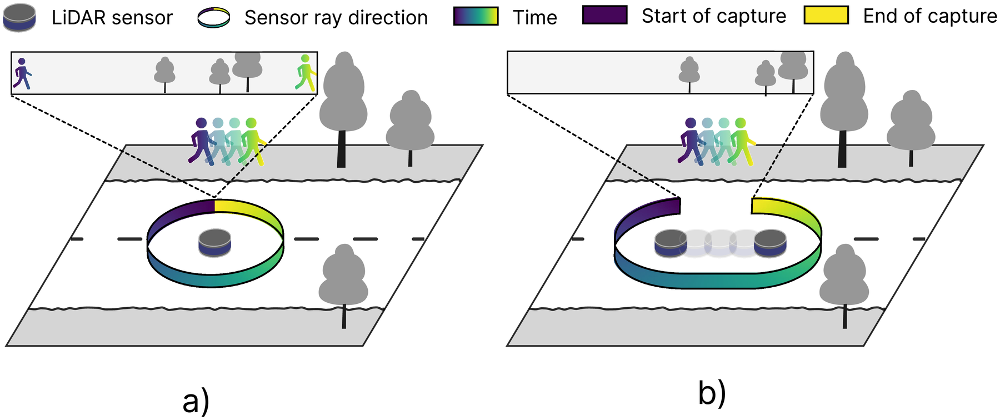
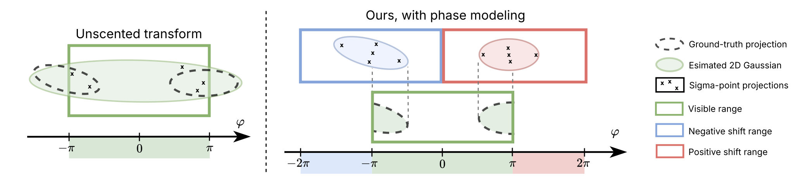
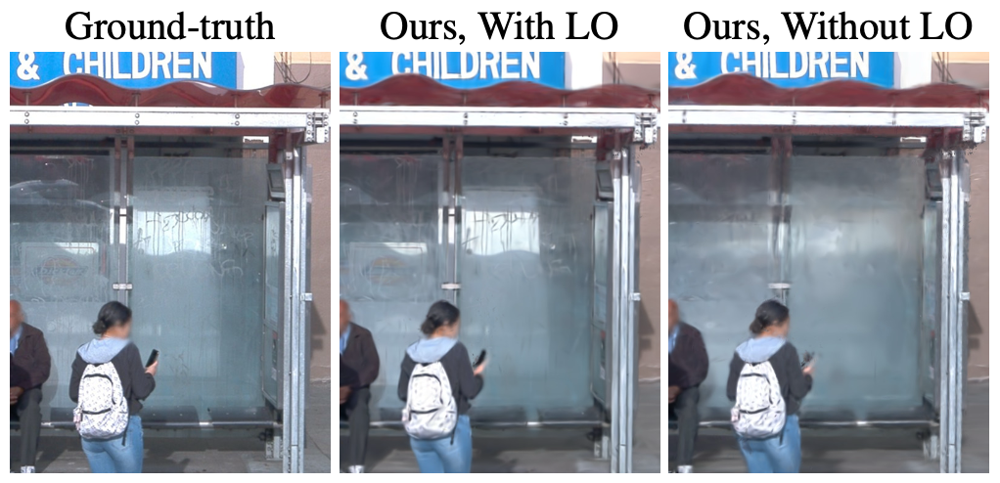

Unified Sensor Simulation
for Autonomous Driving
Method
TODO: write the method narrative clearly from the paper. Start with the LiDAR temporal/spatial discontinuity problem (points captured at different times and poses), then describe the XSIM framework and the LiDAR opacity contribution.
TODO: Problem statement + plain-language explanation (Figure 4).

TODO: Contribution 1: adaptation of 3D Gaussian Splatting + phase/motion modeling
TODO: Discontinuity solution illustration (Figure 6).

TODO: Contribution 2: LiDAR opacity (Figure 5).

Visual Results & Comparisons
This section will hold the only interactive block for now: a synchronized two-video comparison slider.
- Standard views / color visualizations
- Novel-view videos
- Depth maps
- Static LiDAR renders / stitched LiDAR video
Visualization 1: Scene Selector
Scene selector is populated from available proxy scenes with real thumbnails and scene videos.
Selected scene video
No video URL for selected scene.
Two-Video Comparison Slider (Placeholder)
We will replace these placeholders with matched left/right videos from xsim-proxy-tree/
and sync playback + reveal slider.
Left video
Right video
Interactive Simulator
Placeholder for a video that demonstrates simulator controls and interaction workflow.